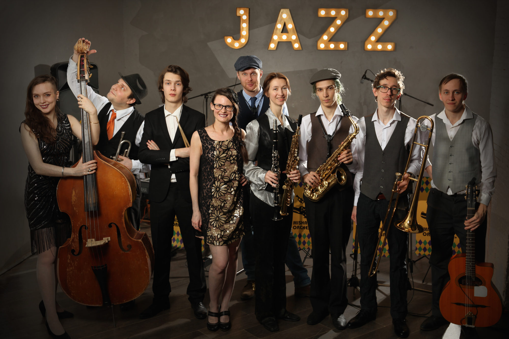
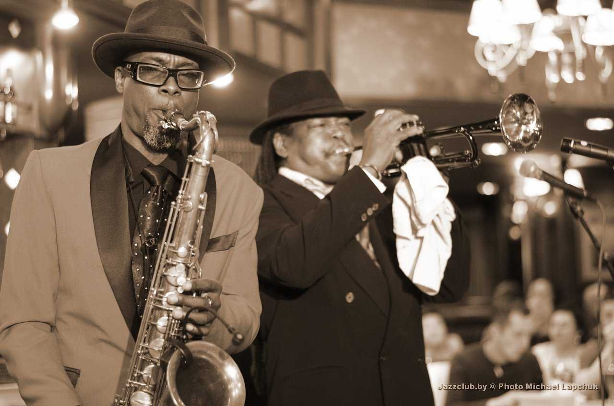
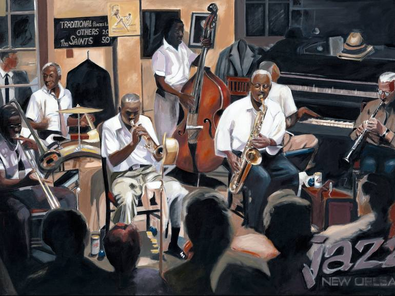
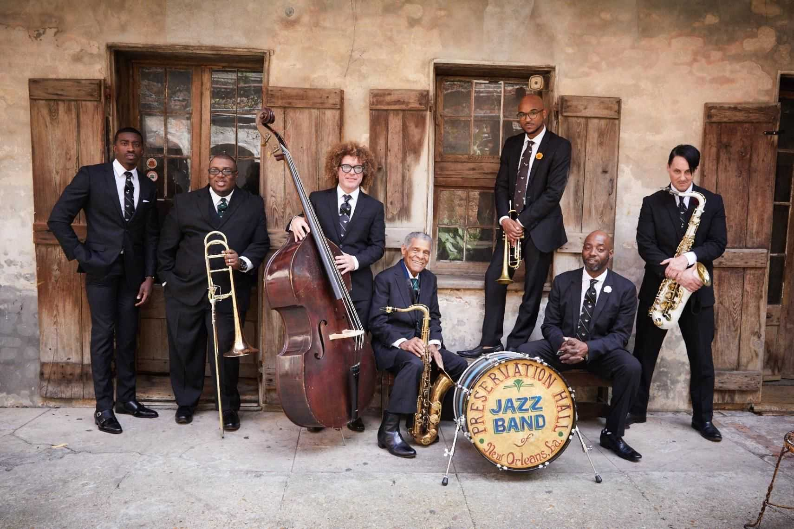
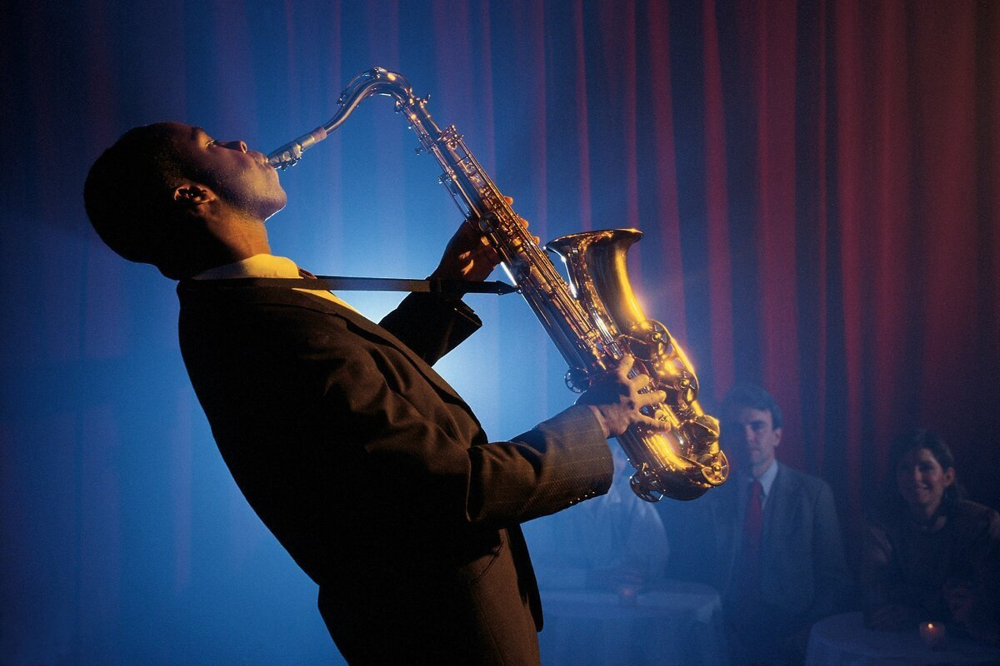

 Джаз – это направление в музыке, которое возникло в США в самом начале XX века. В нем тесно переплетаются ритмы, обрядовые песнопения и рабочие песни афроамериканцев, а также гармоническая составляющая, присущая музыке белых переселенцев. Другими словами, это импровизационный жанр, появившийся в результате смешивания западноевропейской и западноафриканской музыки.
Первая и самая важная особенность – это импровизация. Музыканты должны уметь импровизировать как в оркестре, так и соло. Еще одна не менее значимая черта – полиритмия. Ритмическая свобода, пожалуй, это главнейший признак джазовой музыки. Именно такая независимость вызывает у музыкантов ощущение невесомости и непрерывного движения вперед.
Хорошо известно, что зарождение джаза, как музыкального течения, произошло в Соединённых Штатах в конце XIX века, однако необходимо отметить, что его истоки следует искать далеко от Америки - на африканском континенте. А началось всё с открытия Колумбом нового материка, на который в начале XVII века британцы стали завозить чернокожих невольников. Привезённые рабы, будучи выходцами из разных племенных сообществ, поначалу не понимали друг друга. Чтобы выжить в совершенно новых условиях им приходилось не только находить пути общения, но и создавать единую культуру, в том числе и музыкальную, которая основывалась на ритмах и мотивах родной Африки. Измождённые тяжкой работой и терпящие жестокое обращение белых господ, невольники в часы отдыха изначально утешали себя этническими ритуальными песнями, с характерными для них сложными ритмами. Поскольку у афроамериканцев не было музыкальных инструментов, их пение всегда сопровождалось своеобразными танцевальными прихлопываниями и притопываниями. Со временем подневольные переселенцы стали приспосабливаться к новым условиями. В их жизни появились другие напевы, которые формировались под влиянием культуры белых хозяев.
 После гражданской войны 1861 – 1865 годов в США отменили рабство, но такие перемены не облегчили жизнь темнокожего населения страны. Афроамериканцам в поисках заработка приходилось слоняться из города в город. По дорогам страны стали колесить минстрел-шоу с чернокожими музыкантами, которые веселили случайно собравшуюся публику песнями и танцами, например, такими как кейкуок, впоследствии явившимся предшественником регтайма, одного из важнейших источников джаза. Примерно в то же время как отражение горестной жизни темнокожих граждан Америки зародился блюз – песни одиночества и отчаяния, явившиеся ещё одной первостепенной составляющей джазовой музыки. Так длительное взаимодействие африканской музыкальной культуры, которая отличалась импровизационностью, пластикой и ритмичностью, а также американской народной музыки белых переселенцев с присущей ей гармонией и мелодичностью, привело к возникновению в самом конце XIX столетия совершенно нового музыкального направления, в дальнейшем получившего название джаз.
 Колыбелью джазовой музыки принято считать Новый Орлеан. Именно в этом южноамериканском городе в самом начале двадцатого столетия диковинный околоэтнический стиль стал значительно преобразовываться. Основоположниками новоорлеанского джаза, который впоследствии получил название «традиционный», а также «диксиленд», были Джелли Ролл Мортон, Бадди Болден и Кид Ори. Благодаря творчеству этих музыкантов «синкопированная музыка» стала стремительно набирать популярность и активно распространяться по стране.
Небольшие ансамбли темнокожих музыкантов - первые джаз-бэнды, поначалу выступавшие в ресторанах Нового Орлеана, в поисках лучшего заработка начали гастролировать по разным городам. Так 1917 год ознаменовался началом нового этапа развития джаза, но уже в Чикаго. Там стали деятельно создаваться джазовые оркестры, которые исполняли композиции, отличающиеся не только усложнёнными аранжировками, но и особыми исполнительскими приёмами. Яркими представителями «чикагского джаза» являются Джо Кинг Оливер, Кэррол Диккерсон и несравненный Луи Армстронг.
Процесс развития и видоизменения джазовой музыки с каждым годом проходил всё интенсивнее. Например, в Нью-Йорке джазовый скрипач Пол Уайтмен в 1920 году сформировал большой оркестр и к джазовой музыке подошёл по-особенному. Он явился зачинателем нового стиля, который сам же назвал «симфоджазом». Именно Уайтмен заказал Джорджу Гершвину знаменитую «Рапсодию в стиле блюз» - произведение совершившее революцию в музыкальном мире.
 Следующий этап развития джаза связан с появлением больших джаз-оркестров - биг-бэндов, которые могли исполнять различные танцевальные мелодии. Они практиковали совершенно новый стиль, в котором явно чувствовались отклонения от ритмического рисунка, а яркая сольная импровизация накладывалась на замысловатый аккомпанемент. Такая разновидность оркестровой джазовой музыки получила название «свинг». Наибольшей популярностью в середине двадцатых, а также в тридцатых годах пользовались джаз - оркестры под управлением Дюка Эллингтона, Флетчера Хендерсона, Глена Миллера, Бенни Гудмена, Каунта Бэйси.
Конечно же, такой отход свинга от черт, присущих раннему джазу, от национальных мелодий, вызвал недовольство у некоторых знатоков джазовой музыки. Именно поэтому биг-бэндам и исполнителям свинга начинает противопоставляться игра небольших ансамблей, в которые входили только чернокожие музыканты. Таким образом, в 1940-е возникает новый стиль бибоп, ярко выделяющийся среди других направлений джазовой музыки. Ему были присущи невероятно быстрые мелодии, долгая импровизация, сложнейшие ритмические рисунки. Среди исполнителей этого стиля выделяются фигуры Чарли Паркера и Диззи Гиллеспи.
 Начиная с 1950 г. джаз начал развиваться по двум разным направлениям. С одной стороны, приверженцы классического джаза решили вернуться к традиционной музыке и, отодвинув в сторону бибоп, создали кул-джаз, который отличался эмоциональной сдержанностью. С другой стороны, вторая линия продолжила развивать бибоп. На этой основе возник хард-боп, возвращающий традиционные фольклорные интонации, четкий ритмический рисунок и импровизацию. Этот стиль развивался совместно с такими направлениями, как соул-джаз и модальный джаз. Они сильнее всего приблизили музыку к блюзу.
В 1960-е проводятся различные эксперименты и поиск новых форм. В результате появляется джаз-рок и джаз-поп, совмещающие два разных направления, а также фри-джаз, в котором исполнители вовсе отказываются от регуляции ритмического рисунка и тона. Среди музыкантов этого времени прославились Орнетт Коулман, Уэйн Шортер, Пат Метэни.
В последующие годы джаз продолжал своё интенсивное развитие. Возникли новые стили, среди которых смуз-джаз, эйсид-джаз, джаз-фанк, ню-джаз, дарк-джаз. В результате на сегодняшний день в джазе насчитывается более сорока самых разнообразных стилевых ответвлений.
Даже сегодня джаз непрерывно и динамично развивается, появляется множество направлений и стилей. Эта музыка продолжает вбирать в себя звуки и мелодии со всех уголков нашей планеты, насыщая ее все новыми и новыми красками, ритмами и мелодиями.
.